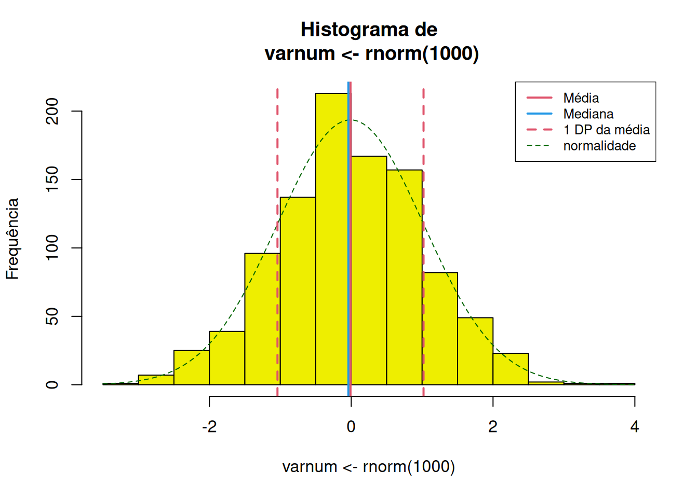
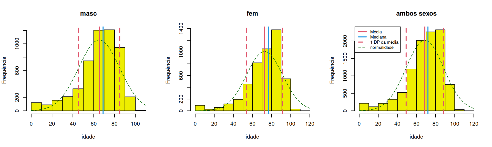
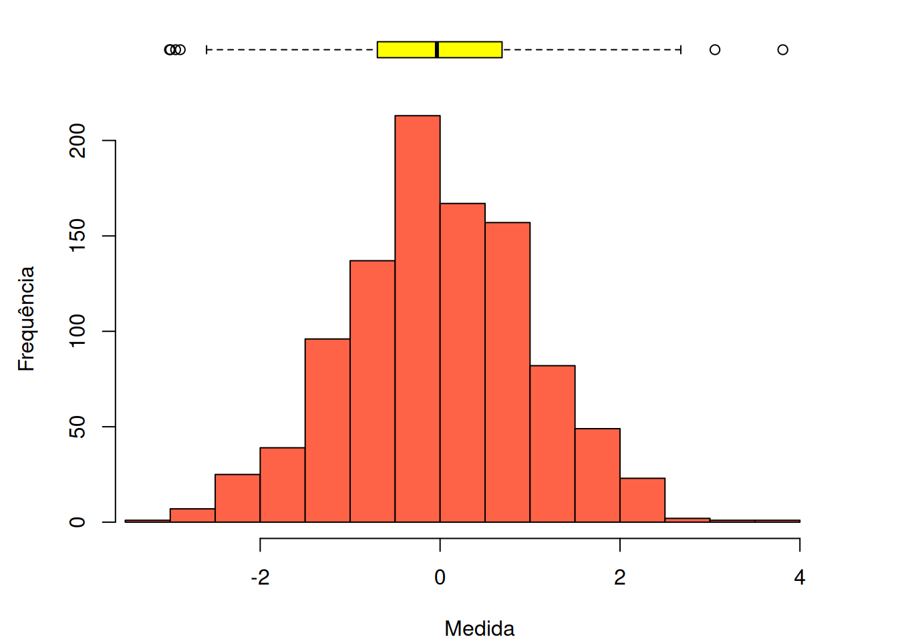
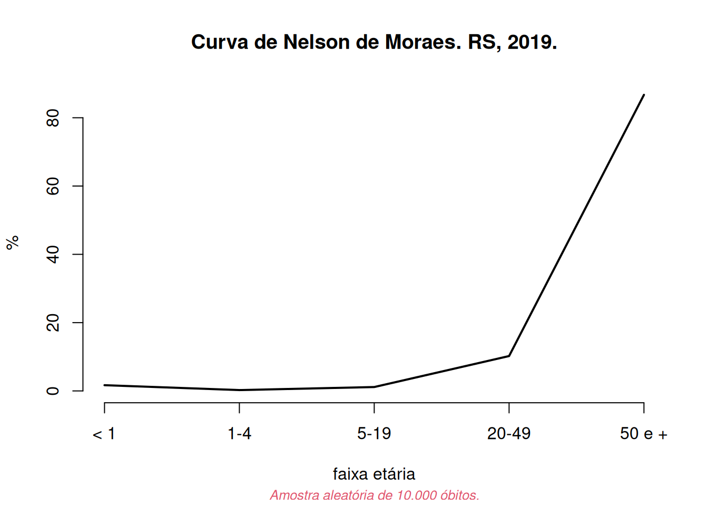

Pacote Rcoisas
Exemplos de uso
Rcoisas.RmdDescrição univariada
Funções
descreve,histoboxetabuleiro.
descreve(x, by = NULL, dec = 2, na.rm = TRUE, data = NULL, histograma = TRUE, breaks = "Sturges", freq = TRUE, main = NULL, xlab = NULL, ylab = NULL, linhas = 2, curva = TRUE, densidade = FALSE, col.dens = 1, col = "yellow2", col.curva = "DarkGreen", col.media = 2, col.dp = col.media, col.mediana = 4, legenda = TRUE, lugar = "topright", lty.curva = 2, lwd.curva = 1, lty.dens = 3, lwd.dens = 2, lty = NULL, lwd = NULL, cex = NULL, print = "output", soma = FALSE, ...)Variáveis numéricas
A função descreve realiza a descrição “completa” de uma variável numérica. Por padrão apresenta uma lista com os parâmetros descritos e um histograma com marcas da distribuição da variável. O histograma pode ser suprimido e a lista pode ser transformada em data.frame.

varnum <- rnorm(1000) : 1000 observações
Válidos: 1000 Missings: 0
Menor: -3.01 Maior: 3.81 Amplitude: 6.82
Média: -0.01 DP: 1.03 CV(%): 8884.81
Assimetria: -0.02 Curtose(real): 2.99
Quantis:
2.5% 5% 25% 50% 75% 95% 97.5%
-2.13 -1.73 -0.70 -0.04 0.69 1.74 2.01
IIQ: 1.39
descreve(varnum, histograma = FALSE, print = "tabela")
varnum
n 1000.00
Válidos 1000.00
Missings 0.00
Menor -3.01
Maior 3.81
Amplitude 6.82
Média -0.01
Variância 1.07
DP 1.03
CV(%) 8884.81
Assimetria -0.02
Curtose 2.99
P2.5 -2.13
P5 -1.73
P25 -0.70
P50 -0.04
P75 0.69
P95 1.74
P97.5 2.01
IIQ 1.39O output pode ser guardado em um objeto e depois impresso como lista ou como tabela (de classe data.frame) e usado para captar em texto cada parâmetro isoladamente.
x <- descreve(varnum, histograma = FALSE, print = FALSE)
Rcoisas:::print.descreve(x)
varnum : 1000 observações
Válidos: 1000 Missings: 0
Menor: -3.01 Maior: 3.81 Amplitude: 6.82
Média: -0.01 DP: 1.03 CV(%): 8884.81
Assimetria: -0.02 Curtose(real): 2.99
Quantis:
2.5% 5% 25% 50% 75% 95% 97.5%
-2.13 -1.73 -0.70 -0.04 0.69 1.74 2.01
IIQ: 1.39
Rcoisas:::print.descreve(x, print = "tabela")
varnum
n 1000.00
Válidos 1000.00
Missings 0.00
Menor -3.01
Maior 3.81
Amplitude 6.82
Média -0.01
Variância 1.07
DP 1.03
CV(%) 8884.81
Assimetria -0.02
Curtose 2.99
P2.5 -2.13
P5 -1.73
P25 -0.70
P50 -0.04
P75 0.69
P95 1.74
P97.5 2.01
IIQ 1.39
paste("Média de", x$media, "e desvio-padrão de", x$dp, "unidades, configurando um coeficiente de variação de", x$cv, "%.")
[1] "Média de -0.01 e desvio-padrão de 1.03 unidades, configurando um coeficiente de variação de 8884.81 %."O objeto pode ser modificado para sua impressão. O exemplo a seguir usa outra função do pacote, formatL(), para apresentar os valores em formato latino.
Rcoisas:::print.descreve(x, print = "tabela") |>
tibble::as_tibble(rownames = "parametro") |>
dplyr::mutate(varnum = formatL(varnum, format = "fg", digits = 3)) |>
knitr::kable(align = 'r')| parametro | varnum |
|---|---|
| n | 1.000 |
| Válidos | 1.000 |
| Missings | 0 |
| Menor | -3,01 |
| Maior | 3,81 |
| Amplitude | 6,82 |
| Média | -0,01 |
| Variância | 1,07 |
| DP | 1,03 |
| CV(%) | 8.885 |
| Assimetria | -0,02 |
| Curtose | 2,99 |
| P2.5 | -2,13 |
| P5 | -1,73 |
| P25 | -0,7 |
| P50 | -0,04 |
| P75 | 0,69 |
| P95 | 1,74 |
| P97.5 | 2,01 |
| IIQ | 1,39 |
O formato em tabela é pensado para uma análise estratificada por categorias de um fator. Não há ainda um argumento by, a alternativa é juntar “manualmente” a descrição de cada estrato:
par(mfrow = c(1,3))
cbind(
descreve(idade, data = obitosRS2019[obitosRS2019$sexo == "masc", ], main = "masc", legenda = FALSE, print = 'tabela'),
descreve(idade, data = obitosRS2019[obitosRS2019$sexo == "fem", ], main = "fem", legenda = FALSE, print = 'tabela'),
descreve(idade, data = obitosRS2019, main = "ambos sexos", print = 'tabela', lugar = 'topleft')
) |>
dplyr::rename("Masculino" = 1, "Feminino" = 2, "Ambos sexos" = 3) |>
dplyr::mutate(Masculino = formatL(Masculino, format = "fg", digits = 4),
Feminino = formatL(Feminino, format = "fg", digits = 4),
"Ambos sexos" = formatL(`Ambos sexos`, format = "fg", digits = 4)) |>
knitr::kable(align = 'r') 
| Masculino | Feminino | Ambos sexos | |
|---|---|---|---|
| n | 5.228 | 4.774 | 10.000 |
| Válidos | 5.220 | 4.772 | 9.993 |
| Missings | 8 | 2 | 7 |
| % missings | 0,15 | 0,04 | 0,07 |
| Menor | 0 | 0 | 0 |
| Maior | 103 | 112 | 112 |
| Amplitude | 103 | 112 | 112 |
| Média | 65,25 | 72,65 | 68,78 |
| Variância | 388,3 | 355,3 | 386,6 |
| DP | 19,71 | 18,85 | 19,66 |
| CV(%) | 30,2 | 25,95 | 28,59 |
| Assimetria | -1,17 | -1,49 | -1,27 |
| Curtose | 4,46 | 5,93 | 4,91 |
| P2.5 | 13,47 | 21 | 17 |
| P5 | 23 | 37 | 29 |
| P25 | 57 | 64 | 60 |
| P50 | 69 | 77 | 72 |
| P75 | 79 | 86 | 83 |
| P95 | 90 | 94 | 92 |
| P97.5 | 92 | 96,72 | 95 |
| IIQ | 22 | 22 | 23 |
A função histobox desenha um histograma com um diagrama de caixas (“box-plot”) horizontal acima do gráfico.
histobox(varnum, col.h = "tomato", col.bx = "yellow", xlab = "Medida", ylab = "Frequência")
Variáveis categóricas
As funções tabuleiro e tabuleiro2 apresentam uma tabela univariada com frequências absolutas e relativas (%) simples e acumuladas.
tabuleiro(x, digits = 1, total = TRUE, cum = TRUE, data = NULL, ...)
NULL
tabuleiro2(varcat, digits = 1)tabuleiro(RACACOR, data = obitosRS2019)
Freq % Freq.acum %acum
1 8514 88.3 8514 88.3
2 567 5.9 9081 94.2
3 10 0.1 9091 94.3
4 534 5.5 9625 99.8
5 17 0.2 9642 100.0
Total 9642 100.0 9642 100.0Uma tabela para apresentação pode ser feita com a função kable{knitr}. Esta função tem argumentos para apresentar resultados em formato latino, mas o trabalho pode ser abreviado com a função formatL{Rcoisas} – enquanto o argumento format não é implementado. Além disso, a frequência acumulada aqui não faz muito sentido.
tab1 <- tabuleiro(RACACOR, data = obitosRS2019, cum = FALSE, digits = 3)
knitr::kable(tab1 |> formatL(format = "fg"), align = 'r')| Freq | % | |
|---|---|---|
| 1 | 8.514 | 88 |
| 2 | 567 | 6 |
| 3 | 10 | 0,1 |
| 4 | 534 | 6 |
| 5 | 17 | 0,2 |
| Total | 10.000 | 100 |
A função foi criada para oferecer axs estudantes um modo fácil de criar no R uma tabela com essas características e valores em formato latino. Na sua primeira versão os valores eram pré-formatados, oferecendo a seguinte tabela:
(tab2 <- tabuleiro2(obitosRS2019$RACACOR))
Freq %(+NA) % válido % acum
1 " 8.514" "85,1" "88,3" "88,3"
2 " 567" "5,7" "5,9" "94,2"
3 " 10" "0,1" "0,1" "94,3"
4 " 534" "5,3" "5,5" "99,8"
5 " 17" "0,2" "0,2" "100"
Total válidos " 9.642" "96,4" "100" "˗"
Missing " 358" "3,6" "˗" "˗"
Total "10.000" "100" "˗" "˗" que facilmente pode ser formatada com kable.
knitr::kable(tab2, align = 'r')| Freq | %(+NA) | % válido | % acum | |
|---|---|---|---|---|
| 1 | 8.514 | 85,1 | 88,3 | 88,3 |
| 2 | 567 | 5,7 | 5,9 | 94,2 |
| 3 | 10 | 0,1 | 0,1 | 94,3 |
| 4 | 534 | 5,3 | 5,5 | 99,8 |
| 5 | 17 | 0,2 | 0,2 | 100 |
| Total válidos | 9.642 | 96,4 | 100 | ˗ |
| Missing | 358 | 3,6 | ˗ | ˗ |
| Total | 10.000 | 100 | ˗ | ˗ |
Mas os valores da tabela estão em formato caractere e não numérico, o que impede a execução de operações matemáticas. Por isso foi rebatizada de tabuleiro2 e seu desenvolvimento descontinuado.
Curva de Nelson de Moraes
fxetarNM(idade = NULL, fxetardet = NULL, grafico = FALSE, ...)A função fxetarNM agrega um vetor com a idade ou com a “faixa etária detalhada” (classificação do DATASUS) segundo as categorias da Curva de Nelson de Moraes (< 1, 1-4, 5-19, 20-49, 50 e +). O argumento grafico = TRUE desenha o gráfico da curva.
fxetarNM(obitosRS2019$idade, grafico = TRUE,
col.sub = 2, font.sub = 3, cex.sub = .8,
main = "Curva de Nelson de Moraes. RS, 2019.",
sub = "\nAmostra aleatória de 10.000 óbitos.") 
Neste caso interessam as frequências acumuladas:
obitosRS2019$idade |>
fxetarNM() |>
tabuleiro(total = FALSE) |>
formatL(format = "fg", digits = 2) |>
knitr::kable(align = 'r')| Freq | % | Freq.acum | %acum | |
|---|---|---|---|---|
| < 1 | 168 | 1,7 | 168 | 1,7 |
| 1-4 | 25 | 0,3 | 193 | 1,9 |
| 5-19 | 114 | 1,1 | 307 | 3,1 |
| 20-49 | 1.021 | 10 | 1.328 | 13 |
| 50 e + | 8.665 | 87 | 10.000 | 100 |
Veja detalhes sobre a função em https://fulvionedel.github.io/Rcoisas/articles/fxetarnm.html
Tabelas 2 x 2
A função bolero analisa a tabela de contingências de duas variáveis dicotômicas. O exemplo a seguir usa um banco de dados do pacote Rcoisas, com uma amostra aleatória de dez mil registros de óbitos do RS para comparar a probabilidade de um diagnóstico de causa cardiovascular e de causa externa segundo o sexo, entre os óbitos. As causas são classificadas com a função cid10cap(), do pacote csapAIH.
obitos <- obitosRS2019[c("sexo", "CAUSABAS")]
str(obitos)
'data.frame': 10000 obs. of 2 variables:
$ sexo : Factor w/ 2 levels "masc","fem": 1 1 1 2 1 2 2 1 2 1 ...
$ CAUSABAS: chr "C349" "I499" "X958" "E142" ...
cardio <- grepl("circulatório", csapAIH::cid10cap(obitos$CAUSABAS)) |>
factor(levels = c(TRUE, FALSE), labels = c("sim", "não"))
bolero(obitos$sexo, cardio)
===============================================================
Tabela 2 por 2
bolero(independente, dependente, dec=2, dnn)
---------------------------------------------------------------
Var. dependente : cardio = sim
Var. independente: obitos.sexo = masc
Missings: 2 (0,0%)
cardio
obitos$sexo sim não Sum
masc 1259 3967 5226
fem 1311 3461 4772
Sum 2570 7428 9998
Proporções (%)
cardio
obitos$sexo sim não
masc 24.1 75.9
fem 27.5 72.5
Razão de Probabilidades: 0.88 ; IC95% (assintótico): 0.82 0.94
IC95% (exato) : 0.82 0.94
Razão de Odds : 0.84 ; IC95% (exato) : 0.77 0.92
Valor-p: Pearson, Yates: <0,001 ; Fisher: <0,001
===============================================================Para mudar a categoria de referência mudam-se antes os níveis da variável. Os rótulos dos nomes das variáveis podem ser modificados com o argumento dnn. Vamos guardar o resultado (num objeto chamdo “tabolero”) para poder usá-lo em texto automatizado.
tabolero <- bolero(factor(obitos$sexo, levels = c("fem", "masc")), cardio,
dnn = c("sexo", "aparelho circulatório"))
===============================================================
Tabela 2 por 2
bolero(independente, dependente, dec=2, dnn)
---------------------------------------------------------------
Var. dependente : aparelho.circulatório = sim
Var. independente: sexo = fem
Missings: 2 (0,0%)
aparelho circulatório
sexo sim não Sum
fem 1311 3461 4772
masc 1259 3967 5226
Sum 2570 7428 9998
Proporções (%)
aparelho circulatório
sexo sim não
fem 27.5 72.5
masc 24.1 75.9
Razão de Probabilidades: 1.14 ; IC95% (assintótico): 1.07 1.22
IC95% (exato) : 1.07 1.22
Razão de Odds : 1.19 ; IC95% (exato) : 1.09 1.31
Valor-p: Pearson, Yates: <0,001 ; Fisher: <0,001
===============================================================
str(tabolero)
List of 14
$ tab : 'table' int [1:2, 1:2] 1311 1259 3461 3967
..- attr(*, "dimnames")=List of 2
.. ..$ sexo : chr [1:2] "fem" "masc"
.. ..$ aparelho circulatório: chr [1:2] "sim" "não"
$ proptab : 'table' num [1:2, 1:2] 27.5 24.1 72.5 75.9
..- attr(*, "dimnames")=List of 2
.. ..$ sexo : chr [1:2] "fem" "masc"
.. ..$ aparelho circulatório: chr [1:2] "sim" "não"
$ RP : num 1.14
$ lci.rp : num 1.07
$ uci.rp : num 1.22
$ OR : num 1.19
$ or.ic : num [1:2] 1.09 1.31
..- attr(*, "conf.level")= num 0.95
$ lci.or : num 1.09
$ uci.or : num 1.31
$ ft :List of 7
..$ p.value : num 0.000118
..$ conf.int : num [1:2] 1.09 1.31
.. ..- attr(*, "conf.level")= num 0.95
..$ estimate : Named num 1.19
.. ..- attr(*, "names")= chr "odds ratio"
..$ null.value : Named num 1
.. ..- attr(*, "names")= chr "odds ratio"
..$ alternative: chr "two.sided"
..$ method : chr "Fisher's Exact Test for Count Data"
..$ data.name : chr "tab"
..- attr(*, "class")= chr "htest"
$ qui2 :List of 9
..$ statistic: Named num 14.8
.. ..- attr(*, "names")= chr "X-squared"
..$ parameter: Named int 1
.. ..- attr(*, "names")= chr "df"
..$ p.value : num 0.000122
..$ method : chr "Pearson's Chi-squared test with Yates' continuity correction"
..$ data.name: chr "tab"
..$ observed : 'table' int [1:2, 1:2] 1311 1259 3461 3967
.. ..- attr(*, "dimnames")=List of 2
.. .. ..$ sexo : chr [1:2] "fem" "masc"
.. .. ..$ aparelho circulatório: chr [1:2] "sim" "não"
..$ expected : num [1:2, 1:2] 1227 1343 3545 3883
.. ..- attr(*, "dimnames")=List of 2
.. .. ..$ sexo : chr [1:2] "fem" "masc"
.. .. ..$ aparelho circulatório: chr [1:2] "sim" "não"
..$ residuals: 'table' num [1:2, 1:2] 2.41 -2.3 -1.42 1.35
.. ..- attr(*, "dimnames")=List of 2
.. .. ..$ sexo : chr [1:2] "fem" "masc"
.. .. ..$ aparelho circulatório: chr [1:2] "sim" "não"
..$ stdres : 'table' num [1:2, 1:2] 3.86 -3.86 -3.86 3.86
.. ..- attr(*, "dimnames")=List of 2
.. .. ..$ sexo : chr [1:2] "fem" "masc"
.. .. ..$ aparelho circulatório: chr [1:2] "sim" "não"
..- attr(*, "class")= chr "htest"
$ p.qui2 : num 0.000122
$ p.Fisher: num 0.000118
$ resumo : 'table' num [1, 1:4] 1.14 1.07 1.22 0
..- attr(*, "dimnames")=List of 2
.. ..$ : chr "aparelho.circulatório"
.. ..$ : chr [1:4] "RP" "IC95inf" "IC95sup" "p"Assim podemos dizer, por exemplo, que a probabilidade de que a causa básica de óbito seja cardiovascular é 14% maior no sexo feminino que no masculino (RP = 1,14; IC95 1,07 a 1,22). Veja abaixo o código utilizado:
[...] cardiovascular é `` `r formatL((tabolero$RP-1)*100, digits = 0)` ``% maior no sexo feminino que no masculino (RP = `` `r formatL(tabolero$RP, 2)` ``; IC~95~ `` `r formatL(tabolero$lci.rp, 2)` `` a `` `r formatL(tabolero$uci.rp, 2)` ``).